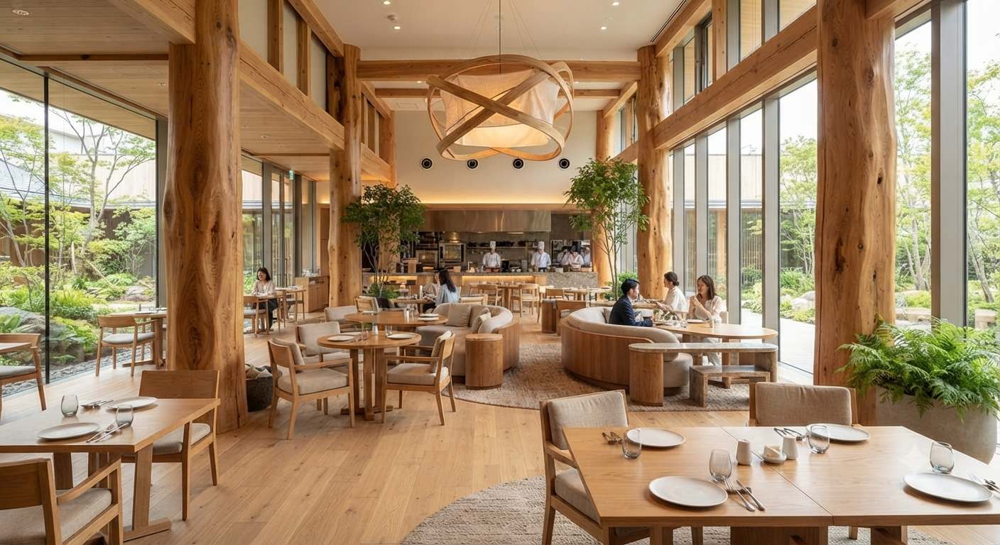
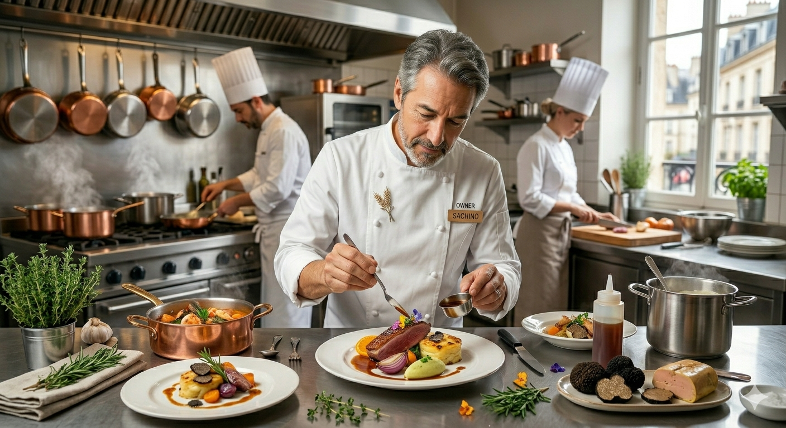

三國清三氏も認めた技術で贈る、
五感を揺さぶる至福の一皿。
PRESENT FOR YOU
「スズキのカルパッチョ」無料引換券配布中
13th
開業からの歴史
2.5万人
累計ご来店者数
96%
料理満足度
4.5
Googleマイビジネス評価

オーナーシェフの橘裕二です。1970年生まれ、宮城の地で育ちました。 開業以来、大切にしているのは「食材の生命力を皿の上に表現すること」。 三國清三氏との出会いは私の料理人生に大きな指針を与えてくれました。
気仙沼のカキや毛ガニ、ブランド豚JAPAN Xなど、地元生産者の情熱を、フランス料理という魔法で最高の形にしてお届けします。
Yuji Tachibana
高級店の味を、ビストロのような居心地の良さで。初めてのフレンチでも、気取らずに本物の味を楽しめます。
お客様の好みに合わせて前菜・メイン・デザートを選べるスタイル。自分だけの最高のマリアージュを見つけてください。
「もっと身近に、もっと特別な日を。」
オ・コションブルーの味と感動を日常にお届けする、2つの新サービスを準備中です。
01 / HOME DINING
シェフ特製ソースや真空低温調理されたお肉・お魚料理をご自宅へお届け。簡単な温め盛り付けだけで、ご自宅が本格ビストロに早変わりします。
02 / ORIGINAL SAUCE
「お店のあの味を家でも使いたい」というお客様のご要望にお応えし、シェフ秘伝の玉ねぎドレッシングやステーキソースをボトルでお届けします。
新サービスの開始通知をLINEでお知らせ!
友だち限定で先行予約や特別モニターの募集を行います。